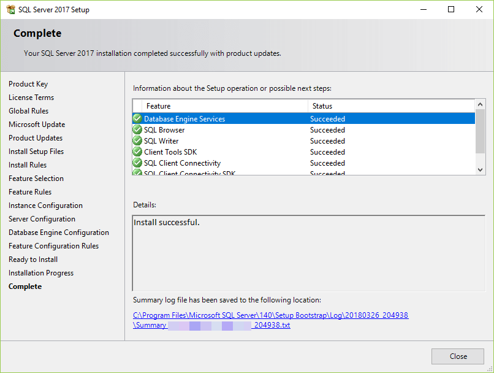

How To Install MySQL (For Linux)
MySQL can do much of the workhorse kind of stuff you see in databases like Oracle or SQL Server, but sometimes it achieves those goals in very different ways. For instance there are many open-source projects that support and surround the database, such as mysqltuner an analysis script, innotop a unix top-like utility for monitoring on-going activity in the database, and maatkit a whole suite of tools that build on and expand the features already present in the MySQL database.
SQL is the most popular language for adding, accessing and managing content in a database. It is most noted for its quick processing, proven reliability, ease and flexibility of use. MySQL is an essential part of almost every open source PHP application. Good examples for PHP & MySQL-based scripts are WordPress, Joomla, Magento and Drupal.
SQL is the most popular language for adding, accessing and managing content in a database. It is most noted for its quick processing, proven reliability, ease and flexibility of use. MySQL is an essential part of almost every open source PHP application. Good examples for PHP & MySQL-based scripts are WordPress, Joomla, Magento and Drupal.
After doing these steps, open /etc/mysql/mysql.conf.d/mysqld.cnf. If you do not have a graphical interphase on your server, use nano to edit. Scroll down to where bind-address is. Edit the following code in your file with a choice of your own for the service to listen on.
bind-address = 127.0.0.1 ( The default. )
bind-address = XXX.XXX.XXX.XXX ( The IP address of your Public Net interface. )
bind-address = ZZZ.ZZZ.ZZZ.ZZZ ( The IP address of your Service Net interface. )
bind-address = 0.0.0.0 ( All IP addresses. )
sudo systemctl restart mysql
/usr/bin/mysql -u root -p # enter the password you used for installation or press Enter if you didn't set one
Paste these lines into your terminal
sudo apt-get updatesudo apt-get install mysql-server
sudo mysql_secure_installation utility # if installation utility does not start automatically
sudo ufw enable # optional: allows remote access
sudo ufw allow mysql # remember to port forward
sudo systemctl start mysql
sudo systemctl enable mysql
After completing all this, you will have a functioning MySQL service. You may now install other packages that need a database to function. Common examples include PHP extensions. The following extentions are recommended for Wordpress websites: gmagick
ssh2
exif
imagick
The following are required, but should be installed by default: dom gmagick SimpleXML ssh2 xml xmlreader curl date exif filter ftp gd hash iconv imagick json libxml mbstring mysqli openssl pcre posix sockets SPL tokenizer zlib
The following are required, but should be installed by default: dom gmagick SimpleXML ssh2 xml xmlreader curl date exif filter ftp gd hash iconv imagick json libxml mbstring mysqli openssl pcre posix sockets SPL tokenizer zlib
For Windows
How To Install Microsoft SQL
- Open the installer
- Click New SQL Server stand-alone installation and include whatever product updates you feel are required
- Allow the defaults under Feature Selection, Instance Configuration, and Server Configuration
- In Database Engine Configuration, under Authentication Mode, choose Mixed Mode and specify a password you would like to use
- Use the default settings for the rest of the dialogs
